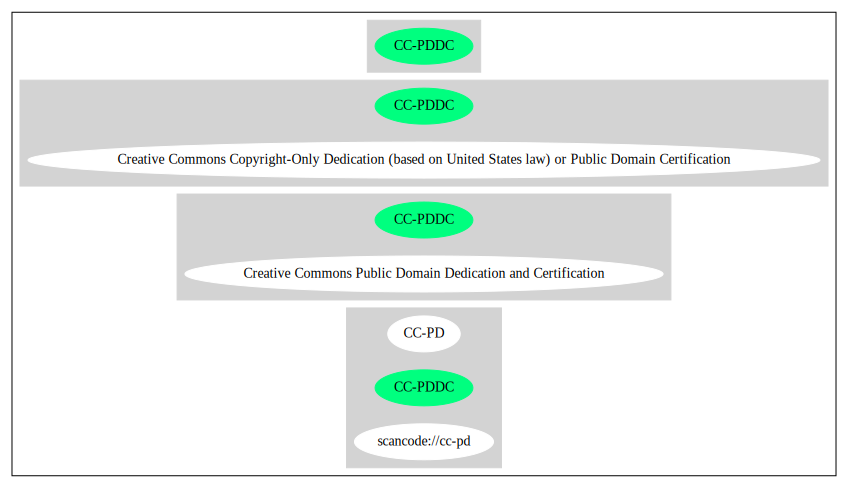

Key |
Value |
|---|---|
Fullname |
Creative Commons Public Domain Dedication and Certification |
Shortname |
CC-PDDC |
Rating |
Unknown, probably Attention or Stop or No-Go |
Classification |
NoCopyleft |
Other Names:
scancode://cc-pd
CC-PD
Homepage: https://creativecommons.org/licenses/publicdomain/
SPDX: http://spdx.org/licenses/CC-PDDC.json
The person or persons who have associated work with this document (the "Dedicator" or "Certifier") hereby either (a) certifies that, to the best of his knowledge, the work of authorship identified is in the public domain of the country from which the work is published, or (b) hereby dedicates whatever copyright the dedicators holds in the work of authorship identified below (the "Work") to the public domain. A certifier, moreover, dedicates any copyright interest he may have in the associated work, and for these purposes, is described as a "dedicator" below.
A certifier has taken reasonable steps to verify the copyright status of this work. Certifier recognizes that his good faith efforts may not shield him from liability if in fact the work certified is not in the public domain.
Dedicator makes this dedication for the benefit of the public at large and to the detriment of the Dedicator's heirs and successors. Dedicator intends this dedication to be an overt act of relinquishment in perpetuity of all present and future rights under copyright law, whether vested or contingent, in the Work. Dedicator understands that such relinquishment of all rights includes the relinquishment of all rights to enforce (by lawsuit or otherwise) those copyrights in the Work.
Dedicator recognizes that, once placed in the public domain, the Work may be freely reproduced, distributed, transmitted, used, modified, built upon, or otherwise exploited by anyone for any purpose, commercial or non-commercial, and in any way, including by methods that have not yet been invented or conceived.{
"__impliedNames": [
"CC-PDDC",
"Creative Commons Public Domain Dedication and Certification",
"scancode://cc-pd",
"CC-PD"
],
"__impliedId": "CC-PDDC",
"facts": {
"SPDX": {
"isSPDXLicenseDeprecated": false,
"spdxFullName": "Creative Commons Public Domain Dedication and Certification",
"spdxDetailsURL": "http://spdx.org/licenses/CC-PDDC.json",
"_sourceURL": "https://spdx.org/licenses/CC-PDDC.html",
"spdxLicIsOSIApproved": false,
"spdxSeeAlso": [
"https://creativecommons.org/licenses/publicdomain/"
],
"_implications": {
"__impliedNames": [
"CC-PDDC",
"Creative Commons Public Domain Dedication and Certification"
],
"__impliedId": "CC-PDDC",
"__isOsiApproved": false,
"__impliedURLs": [
[
"SPDX",
"http://spdx.org/licenses/CC-PDDC.json"
],
[
null,
"https://creativecommons.org/licenses/publicdomain/"
]
]
},
"spdxLicenseId": "CC-PDDC"
},
"Scancode": {
"otherUrls": null,
"homepageUrl": "https://creativecommons.org/licenses/publicdomain/",
"shortName": "CC-PD",
"textUrls": null,
"text": "The person or persons who have associated work with this document (the \"Dedicator\" or \"Certifier\") hereby either (a) certifies that, to the best of his knowledge, the work of authorship identified is in the public domain of the country from which the work is published, or (b) hereby dedicates whatever copyright the dedicators holds in the work of authorship identified below (the \"Work\") to the public domain. A certifier, moreover, dedicates any copyright interest he may have in the associated work, and for these purposes, is described as a \"dedicator\" below.\n\nA certifier has taken reasonable steps to verify the copyright status of this work. Certifier recognizes that his good faith efforts may not shield him from liability if in fact the work certified is not in the public domain.\n\nDedicator makes this dedication for the benefit of the public at large and to the detriment of the Dedicator's heirs and successors. Dedicator intends this dedication to be an overt act of relinquishment in perpetuity of all present and future rights under copyright law, whether vested or contingent, in the Work. Dedicator understands that such relinquishment of all rights includes the relinquishment of all rights to enforce (by lawsuit or otherwise) those copyrights in the Work.\n\nDedicator recognizes that, once placed in the public domain, the Work may be freely reproduced, distributed, transmitted, used, modified, built upon, or otherwise exploited by anyone for any purpose, commercial or non-commercial, and in any way, including by methods that have not yet been invented or conceived.",
"category": "Public Domain",
"osiUrl": null,
"owner": "Creative Commons",
"_sourceURL": "https://github.com/nexB/scancode-toolkit/blob/develop/src/licensedcode/data/licenses/cc-pd.yml",
"key": "cc-pd",
"name": "Creative Commons Public Domain Certification",
"spdxId": "CC-PDDC",
"notes": null,
"_implications": {
"__impliedNames": [
"scancode://cc-pd",
"CC-PD",
"CC-PDDC"
],
"__impliedId": "CC-PDDC",
"__impliedCopyleft": [
[
"Scancode",
"NoCopyleft"
]
],
"__calculatedCopyleft": "NoCopyleft",
"__impliedText": "The person or persons who have associated work with this document (the \"Dedicator\" or \"Certifier\") hereby either (a) certifies that, to the best of his knowledge, the work of authorship identified is in the public domain of the country from which the work is published, or (b) hereby dedicates whatever copyright the dedicators holds in the work of authorship identified below (the \"Work\") to the public domain. A certifier, moreover, dedicates any copyright interest he may have in the associated work, and for these purposes, is described as a \"dedicator\" below.\n\nA certifier has taken reasonable steps to verify the copyright status of this work. Certifier recognizes that his good faith efforts may not shield him from liability if in fact the work certified is not in the public domain.\n\nDedicator makes this dedication for the benefit of the public at large and to the detriment of the Dedicator's heirs and successors. Dedicator intends this dedication to be an overt act of relinquishment in perpetuity of all present and future rights under copyright law, whether vested or contingent, in the Work. Dedicator understands that such relinquishment of all rights includes the relinquishment of all rights to enforce (by lawsuit or otherwise) those copyrights in the Work.\n\nDedicator recognizes that, once placed in the public domain, the Work may be freely reproduced, distributed, transmitted, used, modified, built upon, or otherwise exploited by anyone for any purpose, commercial or non-commercial, and in any way, including by methods that have not yet been invented or conceived.",
"__impliedURLs": [
[
"Homepage",
"https://creativecommons.org/licenses/publicdomain/"
]
]
}
}
},
"__impliedCopyleft": [
[
"Scancode",
"NoCopyleft"
]
],
"__calculatedCopyleft": "NoCopyleft",
"__isOsiApproved": false,
"__impliedText": "The person or persons who have associated work with this document (the \"Dedicator\" or \"Certifier\") hereby either (a) certifies that, to the best of his knowledge, the work of authorship identified is in the public domain of the country from which the work is published, or (b) hereby dedicates whatever copyright the dedicators holds in the work of authorship identified below (the \"Work\") to the public domain. A certifier, moreover, dedicates any copyright interest he may have in the associated work, and for these purposes, is described as a \"dedicator\" below.\n\nA certifier has taken reasonable steps to verify the copyright status of this work. Certifier recognizes that his good faith efforts may not shield him from liability if in fact the work certified is not in the public domain.\n\nDedicator makes this dedication for the benefit of the public at large and to the detriment of the Dedicator's heirs and successors. Dedicator intends this dedication to be an overt act of relinquishment in perpetuity of all present and future rights under copyright law, whether vested or contingent, in the Work. Dedicator understands that such relinquishment of all rights includes the relinquishment of all rights to enforce (by lawsuit or otherwise) those copyrights in the Work.\n\nDedicator recognizes that, once placed in the public domain, the Work may be freely reproduced, distributed, transmitted, used, modified, built upon, or otherwise exploited by anyone for any purpose, commercial or non-commercial, and in any way, including by methods that have not yet been invented or conceived.",
"__impliedURLs": [
[
"SPDX",
"http://spdx.org/licenses/CC-PDDC.json"
],
[
null,
"https://creativecommons.org/licenses/publicdomain/"
],
[
"Homepage",
"https://creativecommons.org/licenses/publicdomain/"
]
]
}